A Internet e a Web
Programação Web A Internet e a Web
Menu
- Alojamento de página Web na cloud
- Conhecer a Internet
- Acesso via HTTP à minha página Web
- Página Web report.html
1:
Neste primeiro ponto foi pedido para criar a nossa primeira página web com a linguagem html, infelizmente não tivemos tempo na
nossa aula prática para dar setup ao PyCharm por isso utilizamos o Visual Studio Code
Foi-nos dado codigo já feito e foi-nos explicado marcadores importantes de html, essa página continha imagens,links,listas etc.
A seguir criamos um repositorio no git para guardar este trabalho e alojamos esta página web no heroku que tambem ficou associado a este trabalho
É possivel chegar a esta primeira página atraves do menu no inicio desta página.
2:
Conhecer a Internet
Neste tópico obtivemos o nosso endereço IP e conseguimos descobrir todas as informações acessiveis apartir deste IP, a seguinte imagem
mostra o site WhatsmyIp
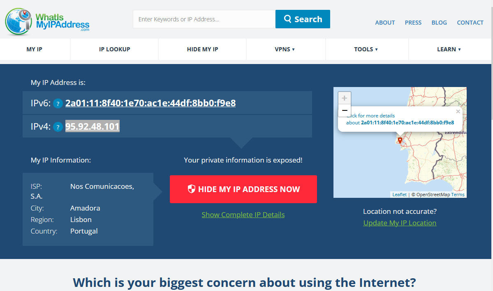
Com este IP conseguimos tirar até a localização aproximada da minha máquina:
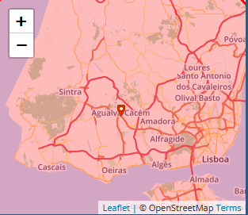
Depois fizemos o mesmo com o servidor do Heroku onde a nossa pagina está alojada:
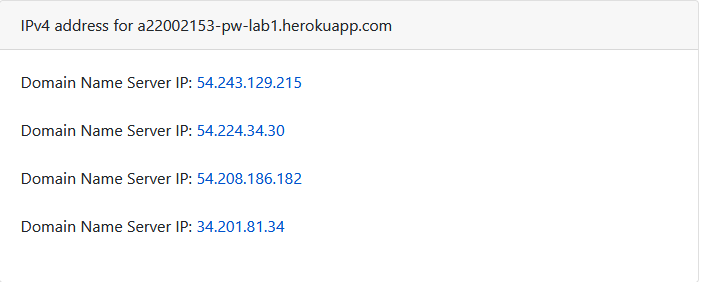
Com a sua localização nos Estados Unidos:
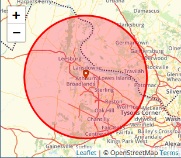
Tracing
Nesta parte do trabalho foi nos ensinado a dar trace na rota dos pacotes de IP, que são enviados do nosso computador até um destino.
Usei a forma apartir da linha de comandos
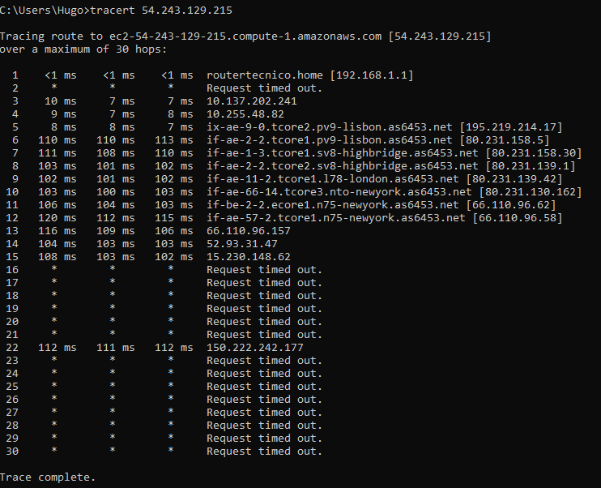
Tambem conseguimos ver o caminho dos pacotes gráficamente com o site https://geotraceroute.com/
demonstrado nesta imagem:

3:
-Acesso via HTTP à página Web
A seguir podemos ver o codigo fonte:
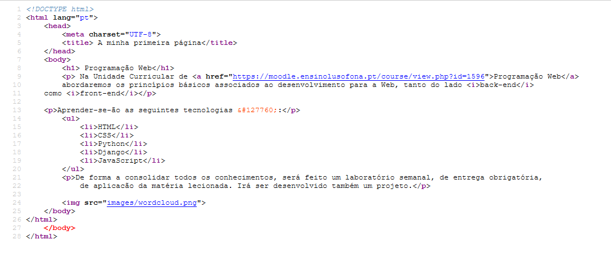
Inspecionar páginas
Depois é pedido para usarmos as browser developer tools para consultarmos as Previews, timings, headers e os tipos de ficheiros
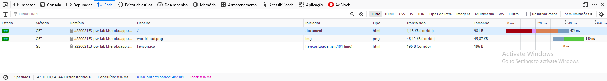
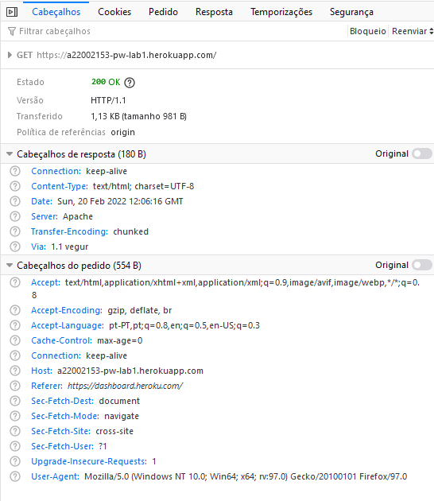
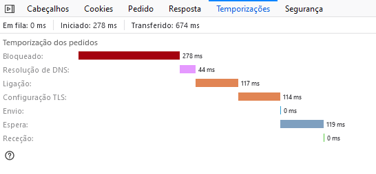
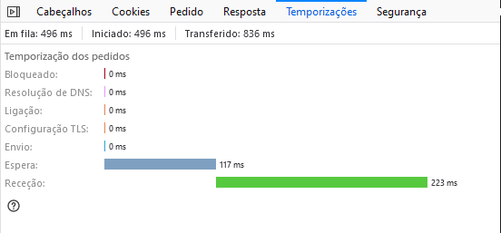
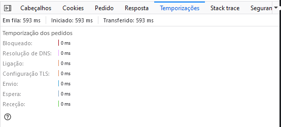
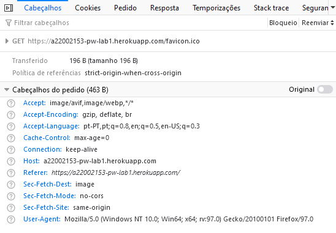
4:
-Pagina Web "report.html"
No tópico final foi-nos pedido para criar esta página que está agora a ver como o report deste trabalho.
Espero que tenha gostado!